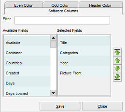

Table view settings
Menu path: Settings > View Settings
The view settings allow you to change the colors and the information shown in the view.
Columns
Here you can select which fields should be displayed in the table view and define their order.

On the left hand side of the screen the available fields are shown. On the right hand side the fields that
are currently shown in the view are shown. Double click on one of the available fields (columns) to add it to
the view. Double click on one of the selected fields to remove the field (column) from the view.
On the top you'll find a filter field. This can be used to quickly find one of the available fields
(as the list can be quite long).
Using the arrow buttons (right hand side of the screen) the order of the selected fields can be changed.
Click on one of the selected fields and press the appropriate arrow button
to move the field up, to the top, down or to the bottom of the list.
Colors
Set the even and odd color and / or change the header color.